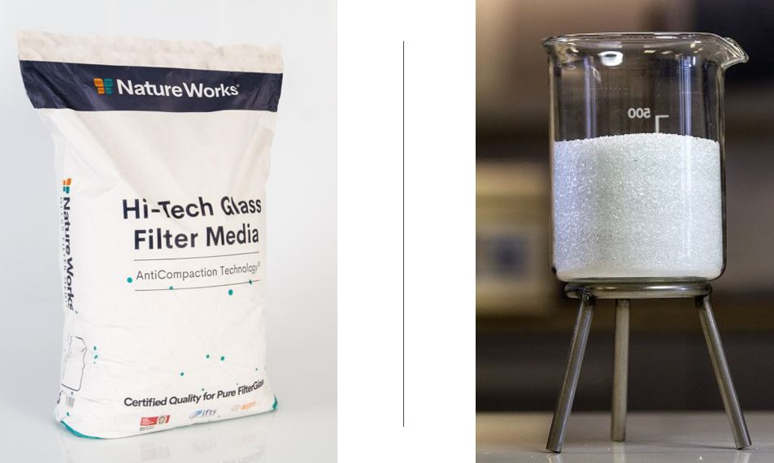
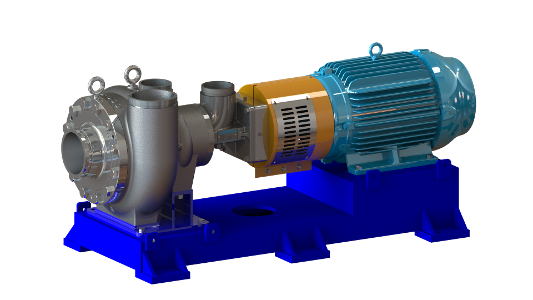

EQUIPMENT BY BRAND
從品牌，找到設備。
選擇品牌與設備類型，查看產品介紹、型號系列及型錄。
05 / 12代理品牌 / 設備系列
OUR REPRESENTED BRANDS
瀏覽所有代理品牌
從熟悉的品牌開始，查看其設備系列與適用類型；也可以直接以型號查找。
12 個系列 · 8 種設備類型
查看品牌介紹 →設備類型
產品設備
全部品牌 · 全部類型 · 12 個系列


UF 外壓式超濾膜
為原水過濾、廢水深度處理與 RO 前端配置 UF 膜單元
型號系列 UF-0610E / UF-0610ET、UF-0615E / UF-0615ET、UF-0615ED / UF-0615EDT 等 13 項
認識產品系列產品型錄 13 份 PDF
- UF-0610E / UF-0610ET 型錄 （另開 PDF）
- UF-0615E / UF-0615ET 型錄 （另開 PDF）
- UF-0615ED / UF-0615EDT 型錄 （另開 PDF）
- UF-0620E / UF-0620ET 型錄 （另開 PDF）
- UF-0620ED / UF-0620EDT 型錄 （另開 PDF）
- UF-1010E / UF-1010ET 型錄 （另開 PDF）
- UF-1015E / UF-1015ET 型錄 （另開 PDF）
- UF-1020E / UF-1020ET 型錄 （另開 PDF）
- UF-0717E / UF-0717ET 型錄 （另開 PDF）
- UF-0915E / UF-0915ET 型錄 （另開 PDF）
- UF-0915E-IP / UF-0915ET-IP 型錄 （另開 PDF）
- UF-0920E / UF-0920ET 型錄 （另開 PDF）
- UF-0920E-IP / UF-0920ET-IP 型錄 （另開 PDF）

SMM 系列 MBR 膜組件
為市政與工業 MBR 系統配置浸沒式膜分離單元
型號系列 SMM-1015 / SMM-1015T、SMM-1522 / SMM-1522T、SMM-2030 / SMM-2030T
認識產品系列



這個條件下，尚未找到系列
可清除關鍵字保留品牌，或重設條件瀏覽全部設備。